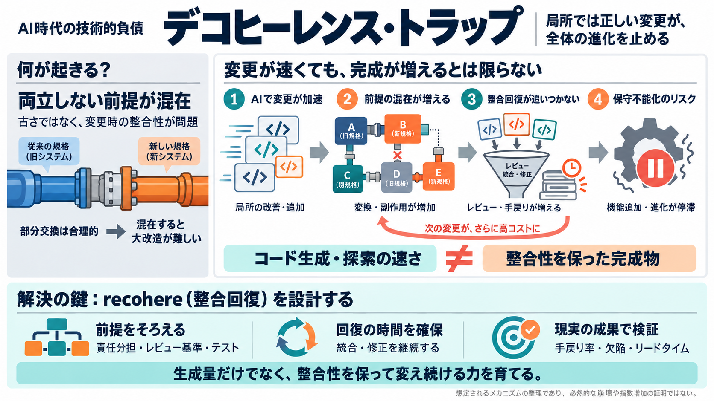

AI Coding Agents Add 30% More Code, Not Software
The research, circulated in AI-news roundups on October 12, 2026 and described as a review-bottleneck study, looked at e…

技術負債が「進化の仕方」を失うとき、変更の速度が代償を呼びます。結論は——壊れる前提のまま“作り直し”が続くと、回せなくなる可能性がある。
デコヒーレンスは「局所的には正しいが相互に両立しないモデル（前提・実装）」が積み重なり、後から直すほどコストが跳ね上がる状態です。
配管交換を「壊れたところだけ」進めると、混在が増え続け、最終的に圧力など重要パラメータを変える大改造ができなくなり得ます。
ソフトでは「局所的に整った変更」が互いに摩擦を起こし、組合せ的に迷路が膨張します。これがデコヒーレンス・トラップの核です。
デコヒーレンスは単なる古さではなく、「次の変更」に慎重さと解析を要求し、手戻りや品質劣化を連鎖的に増やし得ます。
デコヒーレンスは技術的負債に近い概念ですが、「局所モデルの混在が変更時の整合性コストと副作用リスクを連鎖的に増やす」点を強調します。
デコヒーレンスは放置では固定で増えにくく、変更が入るときに増減します。AIで変更頻度が上がり、修復（recohere）の時間が追いつかないと崩れます。
AIコーディングエージェント導入では、コード量は増えても完了成果物は増えず、ボトルネックがコードレビューに移る報告があります。
AIエージェントは迷路を速く探索できても、coherence（整合性）を維持したまま「完成物」を増やせるとは限りません。複雑性は残り、後で効いてくる可能性があります。
著者の方向性は「即座の知能爆発」より、システムを直すこと自体が不可能になり、機能追加も進化も止まる——Decoherence Collapse（デコヒーレンス崩壊）を重く見ています。
バブル内（閉じた評価）では改善確認できても、現実の目的への適合や将来の文脈適応は別データで検証が必要です。指標を追うと進化が正しい方向に固定されない危険があります。
本稿は「AIが悪」と断定するより、変更が加速するほど整合性を支えるガバナンスと設計がないと制御不能になり得る、という警鐘として受け止めるのが妥当です。
短期の出力（生成）を増やすだけでは足りません。混在を減らすための統合的な回復（recohere）を“プロセスとして”続け、変更の勢いが上がり過ぎない文化へ。
キーワード（英語＋簡易日本語）: coherence（整合性）, technical debt（技術的負債）, recohere（整合回復）
The research, circulated in AI-news roundups on October 12, 2026 and described as a review-bottleneck study, looked at e…
A new Harvard working paper, Artificial Intelligence in the Firm: Bottlenecks in Software Production, provides the first…
A new Harvard working paper, Artificial Intelligence in the Firm: Bottlenecks in Software Production, provides the first…
## TL;DR Harvard economists Fiona Chen and James Stratton analyzed roughly 300 million work events across more than 70…
Skip to content ComplexDiscovery # Harvard researchers find AI coding agents shifted the bottleneck to code review Oc…